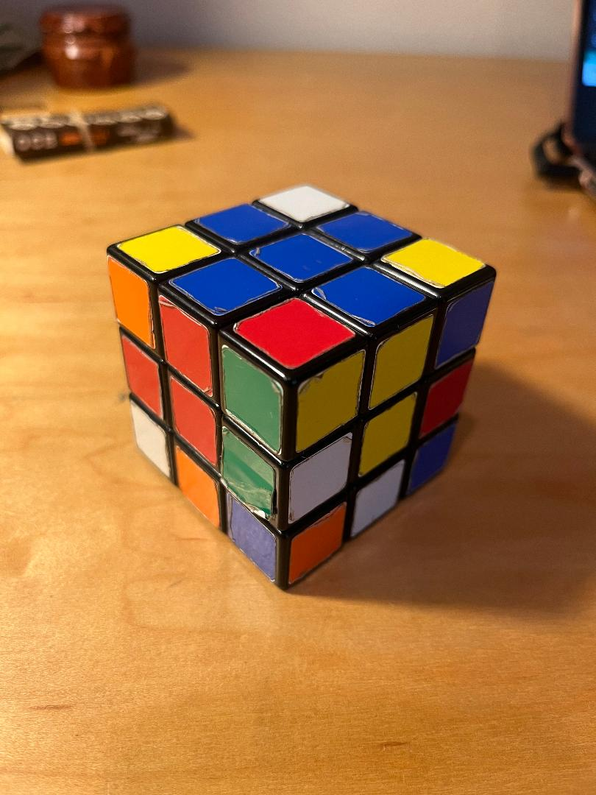

Introduction to understanding the 3x3 Rubiks Cube
Go through the list 1,2,3 & 4 in order and click the underlined blue texts for a dropdown of the instructions.
- Layers
- The Rubiks Cube Pieces
- Algorithm, Symbols & Their Meaning
- Steps
Layers:
Throughout the process of explaining how to solve the cube, I will be describing it in
Layers
. there is a top layer, a
middle layer, a bottom layer and lastly a
front layer


The Rubiks Cube Pieces:
- 8 Corner Pieces
- 12 Side Pieces
- 6 Center Pieces
Corner pieces always have 3 colors that are associated with the 3 sides they align with.
Edge pieces always have 2 colors and are associated with the 2 sides they align with.
And lasty the center pieces are one color,spin but are stationary, meaning they cannot rotate around the cube the way side & corner peices can. Because of this the red center piece will always be opposite of the orange center piece, white across from yellow and blue across from green.
***If you really want to understand the structure and how the pieces function in the cubes design. Take the cube apart and put it back together.***
Algorithms, symbols & Their Meaning
Step 1:
The first step is going to be the most difficult to explain and will require you to do some imagining and visualizing to do. There are no algorithms for this step and is why it is the most difficult. But essentially your goal will be to get The Cross
. while lining the colors of side pieces up with there respective sides. Throughout these 7 steps I use the example of starting with solving the blue side (you can pick anyside, but for this example we will start with the blue side)
Goal For this step:

Further explanation: for the blue side there are 4 side pieces that that have the color blue on them. (the blue side borders the red,orange,yellow & white side). therefore there should be a blue/orange side pice, blue/red side piece, blue/yellow side piece and a blue/white side piece. Notice that the blue "cross" is solved and the side pieces are aligned with the next sides as well
Also note when i say sides i mean the center piece. the color of the center piece represents the color of that whole side. For example in the images above, notice the orange center piece aligns with the orange side of the Orange & Blue Side Piece while the blue center piece aligns with the blue side of the Orange & Blue Side Peice It sounds more confusing when i say it like that but essentially orange center next orange side piece with blue center next to blue side piece.
Step 2:
Next step will be to fill in the 4 corner pieces
of the blue side. This will be your first algorithm and it requires only 3 sets of moves.
or what I like to call: "bring it down, move it over and bring it up". You will do this to all
4 corners until the first layer is complete! when performing the algorithm, always keep the blue side orientated on the top of the cube.
***This step also requires some envisioning & visualizing how the cube pieces change spots as you rotate the cube***
***Its important to first find the corner piece, then see where it needs to go, then respectively where it is in oreitation of the whole cube for the algortithm to work***


In the example video I am moving the blue, orange, yellow corner piece into the location it needs to be. NOTICE the orientation of the peice and where it is located before the algorithm is performed.
Now this can be down the opposite side as well, if you wanted
to get the corner piece from the right side up to the left,
its the same algorithm, just on the left side


example: (in this example i am getting the blue, red and white corner piece into the location it needs to be). similar to the first step before performing the algorithm,
the red side is facing me when performing the algorithm and notice the blue
side of the corner piece is now facing to the right.
for this step it requires some thinking... so play around with the algortihms and the orientation and see what is working and what is not.
Step 3:
Step 4:
Your almost there! now you will need to get "the cross". (similar to step 1, the difference being the side pieces do not need to line up with the adjecent side(that's the next step))
***notice do not pay attention to the corner pieces and if they are solved or not, that will be step 6, only worry about getting the cross!***
you will encounter 1 of 4 scenarios:
- the "dot" (center piece)

- the "L" (center piece and two side pieces in a L shape)
- the "line" (center piece and two side pieces in a Line)
- "cross". (the center piece and the surrounding side pieces)

When performing the algorithm, ALWAYS have the unfinished side orientated on the the top side throughout the algorithm movements. (or always keeping the finished blue side orientated on the bottom)If you get the cross, congrats you can skip this step, thats the goal orientation for step 4.
If you get the dot you will need to do the algorithm 3 times. If you encounter the
dot, it doesn't matter which way its orientated (as long as you keep the blue side orientated on the bottom when holding the cube), once you perform the algorithm it will bring you to the
"L". Make sure the "L" is orientated the upper left corner (all while still keeping the blue finished side orientated as the bottom side and your unfinished side orientated on top) as shown in the image The "L" will bring you to the
"Line". once you have the line you will want the line to be horizontal to you in its orientation as shown in the image repeat the algorithm
one more time and it should give you the cross!
Algorithm:


Step 5:
Step 6:
Getting Close!
Now we got the cross, WITH the side pieces lined up and the cube should look
like this:.
(view from both sides)
Next we need to orientate the cube pieces so that they are in the right spots
This doesn't mean they need to be solve but just need to be in the location of there respective sides (this may sound confusing at first but keep reading and refering to the images throughout this step). Now! what do i Mean by right spots?!?!
You will encounter 1 of 3 scenarios, NON of the corner pieces are in the right spot/location, 1 is in the right spot/location or ALL are in the right spot/location
In the above image,
you can see the corner pieces are not in the right spots/location because the colors do not
match with the sides it is next to it. (its hard to tell from the images but refer to the other 2 scenarios for a better understanding of peices being in the right spot but not solved yet)
HERE we have 1 corner piece in the right spot, while the other 3 corner pieces are not. the follow images is of the same cube from different angles to see each corner piece. ***NOTICE*** the corner piece that is in the right spot (highlighted in green) looks as if you could pull the piece out rotate it and put it back in. while the others (highlighted in pink) are not in the right spot.
Here is an example of when all the peices are in the right spots
, but may not be Solved
yet. when they are all in the right spot you can continue to step 7. ***NOTE*** that when they are in the right spot, they may already be solved, we are focusing on the pieces being in the right spot rather then them being solved in this step.
example of 1 corner piece right and the other 3 wrong:
Colors of the corner pieces
(Green,red,yellow)
Colors of respective sides:
(Green,red,yellow)
Colors of the corner pieces
(Green,White,Red)
Colors of respective sides:
(Green,White,Orange)
Colors of the corner pieces
(Green,Orange,White)
Colors of respective sides:
(Green,Orange,Yellow)
Colors of the corner pieces
(Green,Orange,Yellow)
Colors of respective sides:
(Green,Red,White)
Too explain this look at the texts under the images. see how only 1 corner pieces is in the right spot has the same colors as its sides, while the other 3 do not
to do this you will need to perform this algorithm 1 or 2 times. In the first scenario you will find one piece. that is in
the right spot. Once you found 1 piece in the right spot orientate the cube so the unsolved side is on top,
and the corner piece that is in the right spot is in the front right corner like this.
In the second senario none of the corner pieces are in the right spot, do the algorithm from any side (as long as the unsolved layer is still orientated on top)
GOAL FOR THIS STEP:
(notice how the color of the corner pieces MATCH the color of the respective sides)
(Green,red,yellow)
(Green,red,yellow)
(Green,red,white)
(Green,red,white)
(Green,orange,white)
(Green,orange,white)
(Green,orange,yellow)
(Green,orange,yellow)
When performing the algorithm, You will want to have the cube orientated with you the corner piece that is in the correct spot on the front left side
. essentailly have the red side facing you the whole time, with green side facing up the whole time and blue side oriented on the bottom. while holding the cube.
Orientated like this:
The Algorithm:
Step 7:
You are on your last step. this algorithm can be tricky but if you remain commited it will work.
you will encounter 1 of 3 scenarios:
- none of the corner pieces solved
- 1 of the corner pieces solved
- 2 of the corner pieces solved
regardless of which scenario you get, you will simply pick a corner piece that is not solved and perform the algorithm. you will want the orientation with the corner piece that is not solved in orientated in the front right postions (see below).
essentially repeat the algorithm until the corner piece that was unsolved is solved. once its solved or fixed, move the top layer over to another unsolved piece and repeat the algorithm.
So now we have all the remaining corner pieces in the right position, some may be solved, some may not.
With this algorithm you will repeat it until the corner piece of the top layer is fixed, the rest of the cube
may not be fixed but thats okay. Once the corner piece is finished you bring the next corner piece over. then repeat
the algorithm for the next unsolved corner piece and do that until all the remaining corner pieces are fixed!
One thing to notice after fixing each corner piece when excuting the algorithm is that the corner of the cube should remain solved like this
There you go! you did it! CONGRATULATIONS!

 After Algorithm:
After Algorithm: 
 After Algorithm:
After Algorithm: 


{kind=link}